Fotos de la carta
Son fotos de referencia: muestran cómo es el producto, pero no son de nuestra cocina y el plato servido puede verse distinto. Las de Rappi salen del catálogo de nuestra tienda en Rappi; las de Unsplash y Wikimedia Commons se usan con la licencia que indica cada una.
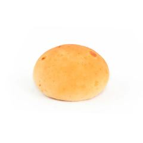
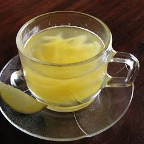
Aromática«Natural Health drink- Agua Aromatica de Papayuela (5261784765).jpg», de momentcaptured1 from NYC, USA, en Wikimedia Commons · CC BY 2.0 · recortada y reducida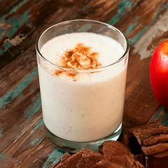
Avena cubanaFoto de catálogo de la tienda Pan Suizo en Rappi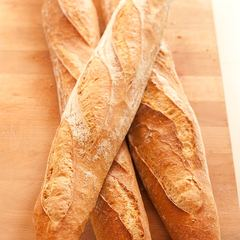
Baguette«Baguettes - stonesoup.jpg», de jules / stonesoup, en Wikimedia Commons · CC BY 2.0 · recortada y reducida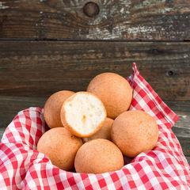
- Café con lecheFoto de catálogo de la tienda Pan Suizo en Rappi
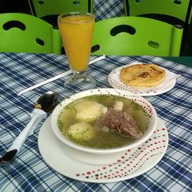
Caldo de costilla«Caldo de Costilla.jpg», de Peter Angritt, en Wikimedia Commons · CC BY-SA 3.0 · recortada y reducida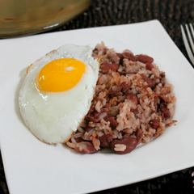
Calentado de frijolFoto de catálogo de la tienda Pan Suizo en Rappi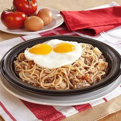
Calentado de pastaFoto de catálogo de la tienda Pan Suizo en Rappi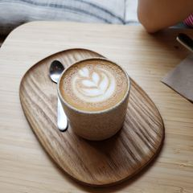
Capuchino«Cortado - LOAM 2023-08-22.jpg», de Andy Li, en Wikimedia Commons · CC0 · recortada y reducida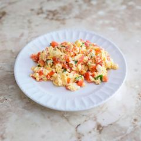
Cazuela de huevosFoto de catálogo de la tienda Pan Suizo en Rappi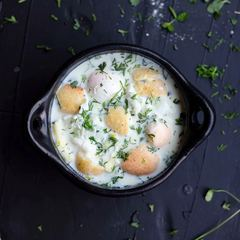
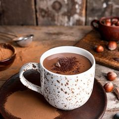
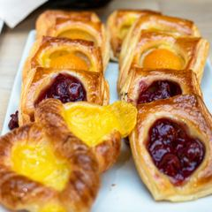
CorazónFoto de Unsplash · Licencia de Unsplash · recortada y reducida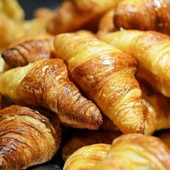
Croissant«Croissants au beurre (18953292873).jpg», de Herry Wibisono (herryway), en Wikimedia Commons · CC0 · recortada y reducida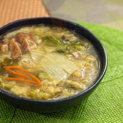
Cuchuco de trigo (martes)Foto de Unsplash · Licencia de Unsplash · recortada y reducida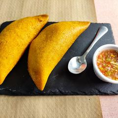
Empanada«Empanada colombiana.jpg», de Francesc Fort, en Wikimedia Commons · CC BY-SA 4.0 · recortada y reducida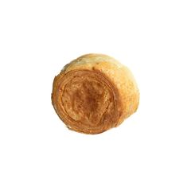
FlautaFoto de Unsplash · Licencia de Unsplash · recortada y reducida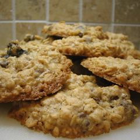
Galleta de avena«Oatmeal Cookies with orange zest, golden raisins, and chocolate chips.jpg», de Paul Martin, en Wikimedia Commons · CC BY 2.0 · recortada y reducida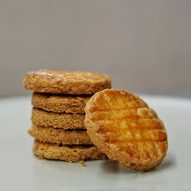
Galleta dobleFoto de Unsplash · Licencia de Unsplash · recortada y reducida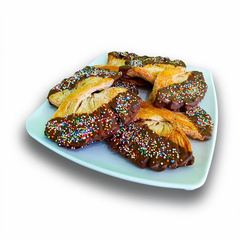
Galleta mariposaFoto de catálogo de la tienda Pan Suizo en Rappi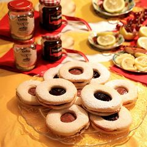
Galleta ojonaFoto de catálogo de la tienda Pan Suizo en Rappi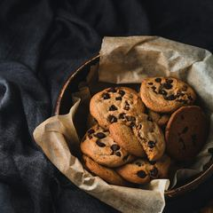
Galleta payasoFoto de Unsplash · Licencia de Unsplash · recortada y reducida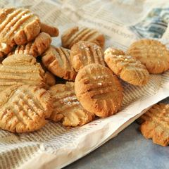
Galleta sencillaFoto de Unsplash · Licencia de Unsplash · recortada y reducida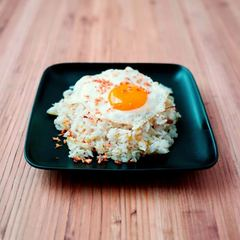
Huevos con arrozFoto de catálogo de la tienda Pan Suizo en Rappi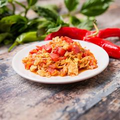
Huevos rancherosFoto de catálogo de la tienda Pan Suizo en Rappi- Jugo de naranjaFoto de catálogo de la tienda Pan Suizo en Rappi
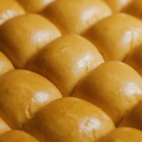
LiberalFoto de Unsplash · Licencia de Unsplash · recortada y reducida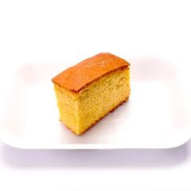
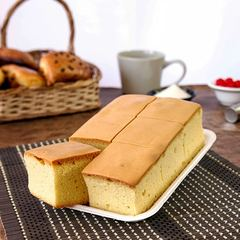
Mantecada juniorFoto de catálogo de la tienda Pan Suizo en Rappi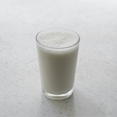
MasatoFoto de Unsplash · Licencia de Unsplash · recortada y reducida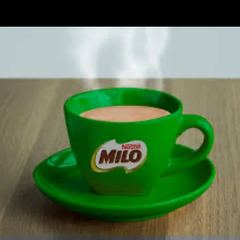
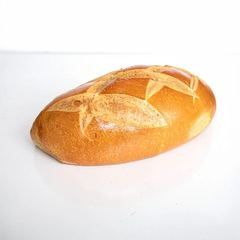
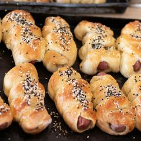
Pan con salchichaFoto de Unsplash · Licencia de Unsplash · recortada y reducida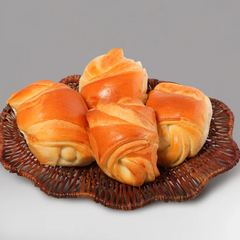
Pan de la casaFoto de catálogo de la tienda Pan Suizo en Rappi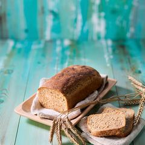
Pan de molde integralFoto de catálogo de la tienda Pan Suizo en Rappi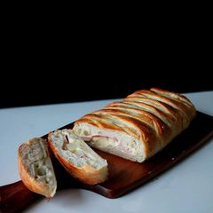
Pan de quesoFoto de catálogo de la tienda Pan Suizo en Rappi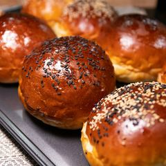
Pan dulceFoto de Unsplash · Licencia de Unsplash · recortada y reducida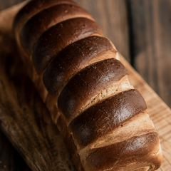
Pan grandeFoto de Unsplash · Licencia de Unsplash · recortada y reducida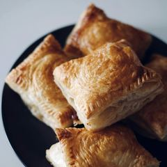
Pastel de polloFoto de Unsplash · Licencia de Unsplash · recortada y reducida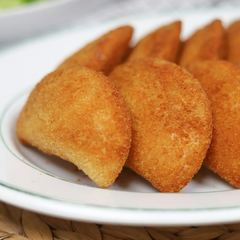
Pastel de yucaFoto de Unsplash · Licencia de Unsplash · recortada y reducida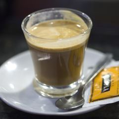
Perico«CaféCortado(Tallat).jpg», de Charles Haynes, en Wikimedia Commons · CC BY-SA 2.0 · recortada y reducida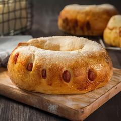
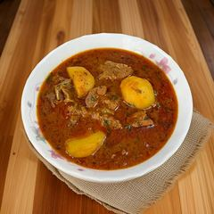
Sancocho (viernes)Foto de Unsplash · Licencia de Unsplash · recortada y reducida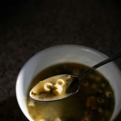
Sopa de pasta (jueves)Foto de Unsplash · Licencia de Unsplash · recortada y reducida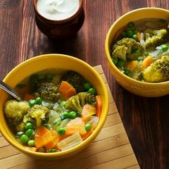
Sopa de verduras (miércoles)Foto de Unsplash · Licencia de Unsplash · recortada y reducida- Sopa del día (lunes)Foto de Unsplash · Licencia de Unsplash · recortada y reducida
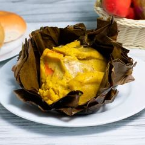
Tamal tolimenseFoto de catálogo de la tienda Pan Suizo en Rappi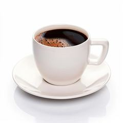
.jpg){kind=link}


.jpg){kind=link}


.jpg){kind=link}